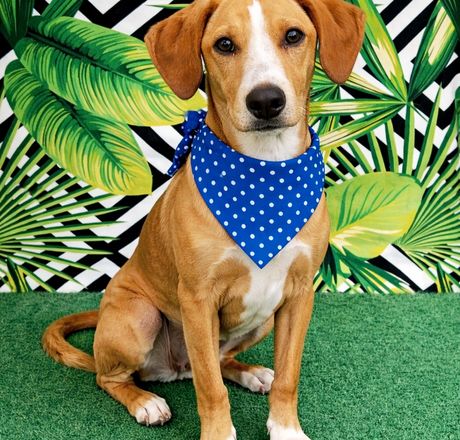
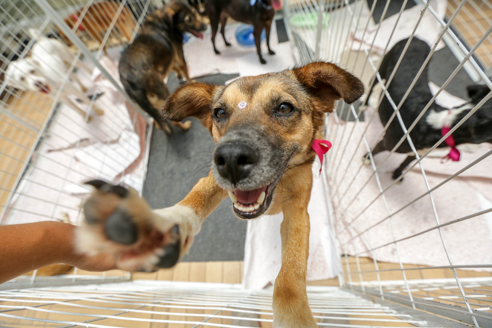
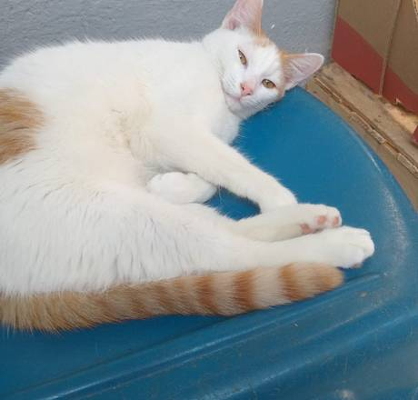
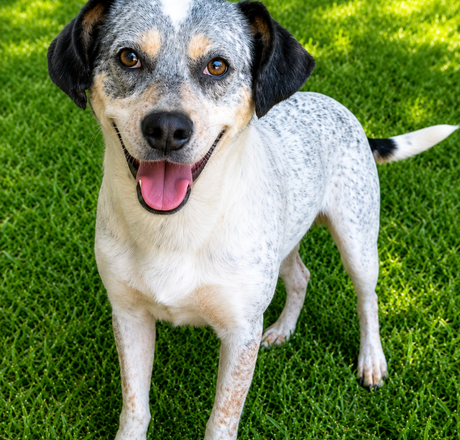
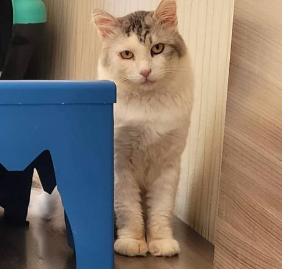

Quem somos nós
Somos a Bicholândia, fundada em 2026 com o objetivo de ajudar animais que necessitam de carinho e amor.
A Bicholândia, dedicada ao acolhimento e proteção em Cornélio Procópio e região tem como missão oferecer abrigo, cuidado e uma nova oportunidade para animais em situação de abandono, maus-tratos ou vulnerabilidade. Atuando com responsabilidade, amor e compromisso com a causa animal, a instituição busca promover o resgate, a recuperação e a adoção consciente dos animais acolhidos, além de conscientizar a comunidade sobre a importância do respeito, da posse responsável e da proteção aos animais. Por meio do apoio de voluntários, parceiros e doações, a Bicholândia trabalha diariamente para transformar vidas e construir um futuro mais digno para cada animal resgatado.

Como você pode ajudar
Adoção pets
Após o cuidado e recuperação, nossos animais estão prontos para encontrar um novo lar. A adoção é feita com responsabilidade, garantindo que cada animal vá para um ambiente seguro e preparado.
Doação attach_money
Todas as contribuições serão convertidas em melhorias que possam auxiliar no nosso trabalho de acolhimento e cuidado dos animais. Você pode doar qualquer valor ou contribuir com insumos como ração, medicamentos e materiais essenciais.
Divulgação campaign
Compartilhar nosso trabalho nas redes sociais ajuda a alcançar mais pessoas, aumentando as chances de adoção e apoio. Sua ajuda na divulgação faz muita diferença.
Animais disponíveis para doação

Kiara
8 meses • Londrina
Saiba Mais...
Max
1 ano • Curitiba
Saiba Mais...